python课程简介
Python基础
爬虫与搜索[数据采集]
restful api设计
scrapy爬虫框架
数据分析
pandas库
Numpy库
matplotlib
深度学习
TensorFlow框架
python基础
安装
使用python3.6.1
yum install zlib-devel bzip2-devel openssl-devel ncurese-devel gcczlib
OpenStack-云计算
语法
- for/while
while/for也可以跟else，意思是for循环结束之后执行，break会跳过else
for :
if :
else :break
变量
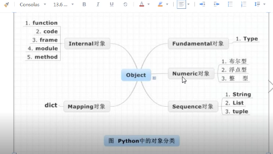
内存
分为堆内存、栈内存。堆中放具体的数据，栈中放引用
基本类型
- 数值类型Numeric
布尔型True
浮点
整形 - 空值
None，在堆内存中也有值
字符串String
单双引号都可以”bus”，’bus’
name=”abcdef” #就是字符串数组
print(name[0])
还可以从右往左数,-1是起始位置
print(name[-1])
切片[起始位置:结束位置:步长]，切片属于顺序型数据的共同用法，list,tuple
包头不包尾find()
my_str = “hello world”
my_str.find(“world”)
找不到返回-1index()
my_str.index(“world”)
找不到返回错误join()
合并2字符串- count()
出现的次数 replace()
替代字符串中某段split()
与Java中相同，返回一个List
若不指定，会将所有的隔开符都隔开partition()
也是切割，将形参中的字符串，隔离出来- capitalize()
字符串首字母 - title()
字符串每个word的首字母大写 - upper()
lower()
startwith()
endswith()
判断开头与结尾ljust(50)
- rjust(50)
center(50)
对齐rstrip
- lstrip
strip
删除空格isalpha
都是字某返回true- isdigit
都是数字 - isalnum
字母或者数字 isspace
只包含空格join
列表转字符串
names=[‘1’,’2’,’’3]
“”.join(names)
“.”.join(names)：笛卡尔积
list列表[]
list
names=[]
- 增
append
在最后追加
extend
两个列表的合并
insert
任意位置插入 - 修改
name[2]=’888’ - 查
in/not in 关键字
判断是否有或者没有
index(元素)
返回元素的下标位
count
统计元素在 删
del
删除某个位置上的元素
del a[2]
remove
删除具体的内容
a.remove
pop
拿出最后一个数据排序
sort()
默认是升序
sort(reverse=True)：降序
reverse()
a.reverse()
a就倒叙了
a[-1::-1]
返回a的倒叙，但a不会倒叙a=[-1::-1]可以
::是一直到的意思- range
c=rang(1,10),lazy的在操作元素时，才会创建
c是一个列表
- range
tuple元组()
元祖与列表类似，不同之处在于元组里的数据不能修改，元组使用(),列表使用[]
创建
my_str=(‘aa’,’bb’,’cc’)
查
my_str[0] ‘aa’
count
index
可变类型：
- 可变类型：list
- 不可变类型:数值，字符串，元组
声明好之后，长度固定，不能修改其中的元素，不能追加
元组中的列表元素可以修改
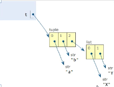
dict字典{} = map
d = {“michael”:95,”bob”:75,”tracy”:85}
访问
d.get(‘bob’)：键不存在，返回None
d[‘bob’]：键不存在，报错
d[‘john’]=’78’删
del stus[‘bob’]
del stus
stus.pop(‘bob’)
内存立即回收，stus就不存在了
d.clear()
d还存在，元素不在了函数lens(),keys(),values(),items()
stu={“name”:”laowang”,”age”:33}for k in stu.keys():
print(k)for v in stu.values():
print(v)for item in stu.items():
print("key为:%s,value为:%s"%item)items()是元组
“name” in stu 返回True
- key值需要可以hash
a=[1,2,4]
b={a:”test”} #此时是不可以的
可以认为，可变类型不能作为key
set集合{}
a={1,3}
print a=set()是空集合
- 增add
- 删pop
- 改
- 查
相互转化
a = {1,2,3,4,4,4,4}
l = list(a) #l是列表
s = set(l) #s是集合
t = tuple(s) #t是元组
可变类型与不可变类型
不可变类型:数值，字符串，元组
a=’abc’
a.replace(“a”,’A’)，它返回一个Abc，但a还是abc
id(a) 打印a执行的内存地址
声明好之后，长度固定，不能修改其中的元素，不能追加可变类型：list，字典
可变类型就是在原址上可以增加修改的类型总结
变量与对象
变量：python可以认为都是引用
对象：对象有类型的差异，并且有具体的内存地址，是内存里具体的东西赋值
python的赋值有2种：一种是引用的指向，二种是创建一个对象
直接一个变量等于另一个变量，都是引用的指向修改，不会创建对象
不可改变类型，重新赋值时，会创建新的对象。传参
传参都是引用的指向，不会创建对象python的缓存:见下面的内存管理
a = 256
b = 256
a is b #Truec = 257
d = 257
c is d #False
python会缓存一些小的对象，比如数值与小的字符串，于是出现以上的情况
案例
元组中的列表元素可以修改
a=[1,2]
b=a
b+=[3,4]
这时候a也是[1,2,3,4]def test(num):
num+=num
print(num)
#a=10 ：数值是不可变类型，在num+=num时，会重新开辟空间使num重新指向
#a=[10] ：[]可变类型，在num+=num时，在原用的内存修改
test(a)
print(a)
基本类型转换
整数字符串转换为对应的整数
int(‘12’)
小数字符串转换为对应小数
float(‘12.34’)
数字转换为字符串
str(123.45)
ASCII码转换为相应字符
chr(97)
字符转换为响应ASCII码
ord(‘a’)
总结
dict = pair
map中可以放很多数据，而中仅能放一条
[{},{}]这种结构还差不多
python是一种弱类型语言，
{“name”:’sun’,”age”:18}，name与age其实是结构
作用域
命名空间（namespace）
全局变量与局部变量
- LEGB: locals > enclosing fuction(闭包) > globals > builtins(内建)
在函数内部要使用global时,需要声明:global a
globals()函数可以看全局的属性
locals()函数,可以看到局部的属性
dir(builtin)== 和 is
is是比较两个引用是否指向了统一对象(引用比较) 或者说地址比较
== 是比较两个对象是否相等（值比较）
a = [1,2,3]
b = a
a == b #True
a is b #True
c = a[:] 或者 c=list(a)
a == c #True
a is c #False
运算
进制、位运算
int(o, 8) = 10 #把8转换为八进制的10
int(h, 16) = 10
bin(5) = ‘0b101’
bin(-5) = ‘=0b101’
位与&
位或|
位异或^
取反~
左移<<
右移>>
函数
表达式或者关键字没有(),且有：
函数才有()
内置函数
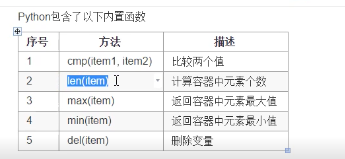
语法
def print_hello():
print(“人生苦短，我要学python”)
def test(r):
s=3.14*(r**2)
print(s)
def sum_2num(a,b):
if not isinstance((a,b),(int,float)) #是否为int或者浮点数(int,float)是个数组
print(“请输入正确的字符类型”)
return
return a+b
def create():
a=1
b=3
return a,b
x,y=create()
z=create() #z是元组
看到def后会加载函数，并不会执行
全局变量与局部变量
作用域与C语言相同即，全局变量可以在函数内获取并修改
修改不可变类型的引用，global
不定长参数
def test(x,y,*args):
print(x,y)
print(args)
不定长参数是以元组的方式传入
def test(x,y, **kwarg):
print(x,y)
print(kwarg)
此时候的不定参数是键值对
递归函数
匿名函数lambda
lambda [arg1[,agr2…agrn]]:表达式
sum = lambda x,y:x+y
print(sum(22,45))缺点不能简单的操作，因为函数体只能是表达式
lambda可以作为实参传递给函数
def test(a,b,func):result = func(a,b) return resultprint(test(23,33,lambda x,y:x*y))
感觉像是懒加载，以及lambda也是一个引用，定义在栈上dict排序
stus=[{“name”:”zs”,”age”:12},{“name”:”ls”,”age”:14}]
stus.sort(key=lambda x:x[“name”]) #返回类表中每个元素name的value
print(stus)动态语言：用户可以随意变化表达式
def test1(a,b,func):return func(a,b)function = eval(input(“请输入表达式:”)) #eval可以将输入的字符串，转变为表达式
print(test1(4,5,function))
交换
a=1
b=3
#借用元组来实现的
a,b=b,a
文件操作
文件
与C语言类似
f = open(“test.txt”,’w’)
r/w/a
r+打开一个文件用于读写，文件指针在开头
w+读写，如果文件已存在就将其覆盖，否则就创建
a+读写，不创建，文件指针在最后。
f.close()
f.write(“abcd”)
f.read()/f.read(6)：看参数
f.readline()读取一行：一行一行读
f.tell()返回文件指针位置
f.seek(offset,from) form：0-文件开头，1当前位置，2文件末尾
f.seek(0,0)文件开头
文件夹
import os
file_list=os.listdir(“test/“)
for f in file_list
print(f)
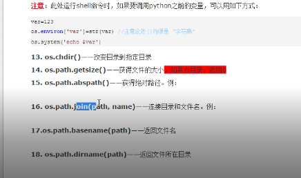
实例
从指定目录下，找包含有hello的py文件
1 | import os |
类和对象
定义类
class 类名：
属性
方法列表
方法第一参数一定是self
对象名 = 类名()
实例
使用上与C++/Jave相同
1 | class Car: |
不同
属性上很另类
而且有self:self其实与this有些类似
魔法方法xxx
init(self)
类于构造函数，但构造函数是构造时，init是构造之后初始化的时候
1 | def __init__(self): |
初始化对象的方法，不是构造方法：new()构造对象–>得到一对象–>init(self)
del(self)
当内存中释放一个对象时，调用del()方法
类似于析构函数
注意python中=，都是引用，但其引用可以重新指向
str(self)
def str(self):
return “string here”
类似与Java的toString方法
new(cls):
- 必须有返回值，类的对象
- 如果不返回，对象不会构建，也就不会运行init方法
return object.new(cls) - 与init区别
1.new是构造，init是初始化
2.new是类方法[可以通过类来调用]，init是普通方法
3.先执行new后执行init
掷骰子
- range()也是包头不包尾
- random.randint(1,7)需要引入import random
- 思路
掷骰子游戏可以有多个人来玩，多个骰子在一个骰子钟里抛掷相加得到结果
Game与Play是聚合，Play个数可以指定
Game与Dices（骰子钟）是组合关系
Dices与Dice也是聚合关系，个数可以指定
私有化（隐藏）
属性：__xxx
方法：def __xxx():
继承
定义
class Animal:
class Dog(Animal):
在子类后加()，写入父类即可。有些像函数，不可混。差异
子类的init()会覆盖掉父类的init()
经测试new方法也会覆盖掉父类的
new会覆盖掉init
父类的公有属性，如果父类init方法没有调用，也就继承不了，也就是说：属性没有继承super().init()可以手动去实现多继承
class C(A,B):
就是多继承，继承关系的优先级C>A>Bprint(C.mro)可以打印继承关系
可以所有类看出从object中继承，这一点与Java相同
其中的init(),del()重写
子类与父类的方法名相同就叫重写
super().init()
重写中，可以通过super()调用父类的方法多态
- python是弱类型语言，没有多态
类属性（对象属性的区别）与类方法
- 类属性是类对象所拥有的属性，它被类对象的实例所共有，在内存中之后一个副本
- 就是C++/Java的静态成员变量
- 定义
1 | class People(object): |
对象属性
就是对象自己的
self.name = name 这种区别
类属性可以被子类继承，对象属性不能直接继承
继承仅是继承父类的方法，以及类属性
类属性只能通过类来修改：People.name = “ww”
当时有p.name = “zs”定义了一个对象属性name类方法
一定要在类上加一个修饰器（注解）
@classmethod
def getName(cls):
其中cls代表调用这个方法的类
类方法可以通过类名来调用People.getName()
类方法可以修改类属性静态方法
@staticmethod
静态方法是类方法的特殊一种，属于类，没有默认传递的参数
@staticmethod
def getAge():
调用与类方法相同：对象与类都可以调用
由于没有cls，只能通过类名在修改类属性
单例
1.伪单例：自己写getInstance()静态方法，通过调用此方法来获得对象
2.真单例：重写new方法，所有的构造的都是单例
简单工厂
这个简单工厂就是用一个factory类的一个类方法，来生成继承关系的不同子类对象。
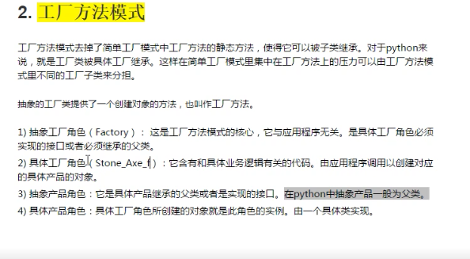
枚举
1 | from enum import Enum |
类的数据隐藏
x双下划线，属性私有，实现方法名字重整：num，在类dir(t)时，会改变私有对象的名字:_类名属性名，其实并没有真正的隐藏，只是外部的访问上改了名字
_x单下划线，被当作模块导入时，不导入。外边是可以访问的
xx__:名字空间的魔法属性:init
self这里不是关键字，第一个代表对象本身，可以用this等来代替
property用法
- 使用property方法升级getter 与 setter
1 | class Test: |
#这种写法就把money变成共有不就好了
- 装饰器写法
@property : getter
@money.setter : setter
方法名与属性名的去掉__一致
1 | class Test: |
异常
语法
try..except，except就是catch
Exception/NameError/FileNotFoundError/ZeroDivisionError
except可以用元组来实现多个异常
as ex，ex是异常变量
1 | try: |
抛异常：raise exception
异常嵌套，异常传递
自定义异常
class PasswordException(Exception):
模块
- 模块相当于jar包
- import 即可
模块与包
相当于jar包导入
import 模块名
模块名.函数名()import random
random.randint(1,5)from 模块名 import 函数名(变量，类等)
from random import randint
randint(1,5)from 模块 import *【几乎不用】
一个模块全部内容都导入as 导入时，给模块重新命名
import random as rdm
rdm.randint(1,5)
random__file__注意
若导入有相同的函数名，后导入的会覆盖先导入的
测试
name:main()
if(name==”main“):#python解释器主动执行该模块代码为了测试
print(isnull(“”))
all：后边加列表，用于写出模块中需要导出的方法/变量/类，但这种方式只有from ..import *时可用，在python3中，使用较少
all=[“isnull”]
包
本质上就是一个目录，把模块放入目录中，就可称为一个包
优先到当前目录，然后是python系统目录
import 包(文件夹).模块(文件)
from 包 import 模块
python3中目录就是一个包
python2中需要有init.py文件,即使是空文件也可以
如果在init.py中增加from . import module1，那么在其他中可以直接import包名
这里的import类似于c/c++的include
发布
把自己写的模块，发布到python的系统目录下
- setup.py
在包同级目录下增加setup.py文件，并写
1 | from distutils.core import setup |
- python3 setup.py build
- python3 setup.py sdist
安装
- 找到模块安装包
- 解压
- 进入文件夹
- 执行python3 setup.py install即可
杂项
传参
import sys
sys.argv
参数第一个是.py本身
sys.argv[1::]列表推导式
其实就是创建列表/字典的
a=[i for i in range(1,10)]
a=[i**i for i in range(1,10)]
b=[x for x in range(1,3) for y in range(0,2)]
[1,1,2,2] 循环的嵌套1循环2次，2也也是2次
c=[x for x in range(1,101) if x%2==1]
习题
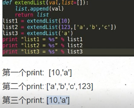
其实即使函数的默认参数只会创建一次,因为它懒
坦克大战
环境
pip install pygame
类
- 游戏主界面
- 坦克
- 敌方
- 我方
- 炮弹
- 隔离墙
- 爆炸
这些类都是sprite
pygame sprite 是pygame中所有类的基类
爆炸效果：由小到大切换图片
问题
如何完成爆炸的检索？
- 第一种方式是炮弹运行检索所有坦克
- 自识别，炮弹遇到障碍物就有事件出发进行处理
python的继承
python的继承，在父类里会写很多的东西，而在子类中只是写与父类不同的东西。如果用类变量
那是否可以增减删除
python在删除del某个变量后，变量就没有了，不是为None了引用问题：
之间的阻隔物，是由一个图片在不同位置显示而造成的连续，但这对阻隔没法完成，于是新建了Iosolations类使创建一个一个的Wall类，并维护这些类的显示，访问（是否相遇）
这时候出现一个问题，创建的这些Wall类，竟然只显示在最后一个位置上
通过分析，位置没错，原因在于Python的对象都是引用（可改变位置的引用），这几个Wall类对象，都指向了一个rect位置，而这个位置经过修改赋值给了另外的Wall类，结果造成了都在最后一个位置上
修改：每个Wall对象，内部构件自己的rect，通过传入left,top来修改这些rect的显示位置。
试过深拷贝，但不好使，原因：深拷贝对容器之外的普通对象失效。
墙黏坦克问题
解决好上个问题，在tank移动的时候，判断是否与墙相遇，如果相遇，则使其不能移动，这样就可以造成阻隔。
但这样造成另外一个问题，墙与坦克相遇后，就是不能移动了，像是墙把坦克给黏住了。解决这个问题，就把坦克移动增加了一个lastDirection，发现也不好使，因为通过不断变化方向还是可以移动进入墙。修改：判断走完这一步，是否相遇，如果相遇，就补偿回来。这样既可。
坦克创建在墙里边的问题
坦克建立后，判断与墙是否相遇，如果相遇，重新给建立left坐标
python进阶
模块与导入模块的路径设置
查看模块搜索路径
import sys
sys.path
所谓模块的搜索路径，指的是path执行import时，搜索的路径，这点有点像Windows的path环境变量，以上函数是查看现有的路径添加搜索路径
sys.path.append(‘/home/xxx文件夹’) #加在最后
sys.path.insert(‘/home/xxx文件夹’) #加在首部
这两个函数是添加新的路径重新导入模块
from imp import *
reload(模块名)
这块重新加载查看安装的模块
- 在交互解释器中使用help(“modules”)
- import sys ; sys.modules.keys()这个会把具体的包中模块也打印出来
这个主要是这个help命令，可以模块名
help(“pygame.Rect”)
dir()
如dir(sys)，其实就是列出给出对象的属性，这个些属性有对象的dir()提供
如果是module对象，只有module的属性
如果是类对象，会列出其本身的属性，以及基类的属性复习
dir能列出模块中的类、对象等属性，对于自己的代码，需要先通过sys.path.insert将模块的目录导入，然后再调用dir(模块名)来查看
循环导入
- 两个模块互相的导入
怎样避免循环导入
类似与#ifdef __DEFINE_H_H吗？
深拷贝与浅拷贝[重点]
浅拷贝这里就是拷贝了引用,深拷贝就是对一个对象所有层次的拷贝。其实与C++的深浅拷贝概念相同
就是deepcopy会递归的copy，而浅拷贝不会
import copy
copy.deepcopy
copy.copy
实例：
a = [1,2,3]
b = [4,5]
c = [a,b]
d = cimport copy
e = copy.deepcopy(c)
f = copy.copy(c)
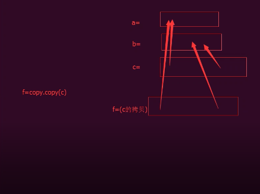
浅拷贝对不可变类型和可变类型的copy不同（元组与列表）
a=(1,2,3)
b = copy.copy(a)
a is b #True
对于不可变类型的copy，其实就是a=b，引用指向相同的地址
【新】生成器，yield
- 初识(列表生成器)
g=(x for x in range(5))
g.next(),没有更多元素时,抛出StopIteration的异常
生成器只能用一次
for i in g:print(i) 第二种方法:yield
def fib(times):
n = 0
a,b=0,1
while n<times:yield b #yied投降,运行在这里就停一下,并且抛出后边的内容,调用一次next执行一次 a,b=b,a+b n+=1return ‘done’
g = fit(5)
#输出
next(g)
for x in g:生成器方法:next()
g = fib(5)
g.next()生成器方法:send()
g = fib(5)
g.next() / g.send(None)
g.send(“hehe”)send给生成器传递一个参数
在生成器内部:
temp = yield b #生成器抛出b,传递进的”哈哈”赋值给temp
迭代器
可迭代对象：iterator
from collection import Iterable
isinstance([],Iterable)
集合对象
生成器对象
迭代器：可以被next对象调用，并不断返回下一个对象
l = [1,2,3]
it = iter(l)
next(it) #集合本身不是迭代器
from collector imort Iterator
isinstance(it,Iterator)
【新】闭包
定义
函数内部可以再定义内部函数,内部函数对外部函数的属性可以直接引用,则称内部函数为闭包
2个条件:嵌套函数定义,内部函数引用外部函数变量
只调用内部函数时,被引用的外部函数变量,会绑定到闭包中,一定程度上延长了生命周期
其实可以理解为,构成闭包时,外部函数的变量声明周期到了延长到了内部
实例
嵌套函数
1 | def fun1(): |
返回的是一个函数对象
闭包
1 | def outter(num): |
应用
一元一次方程:y = ax+b
1 | def line_conf(a,b): |
装饰器
定义
装饰器其实就是一个闭包,把一个函数当作参数,其中对函数进行包装,返回一个替代版新函数,其实与设计语言中了一样,也类似AOP
2个特性:
一个是把被装饰的函数替代为其他函数
而是可以在加载模块时立即执行
1 | def w1(func): |
其实就是AOP
装饰器内部函数的参与与被装饰的参数相同
不定长参数：可以将内部函数的参数设置为不定长参数，(args,**kwargs)
args表示任何多个无名参数，它是一个tuple；kwargs表示关键字参数，它是一个dict。并且同时使用*args和kwargs时，必须*args参数列要在**kwargs前
函数可以认为都有返回值，没有return时，return的是None
功能
1 | def makeBold(fn): |
通用装饰器
- 不定长参数
- 带返回值
1 | from time import ctime |
【特】动态语言特性
定义
动态语言：在运行过程中，可以修改代码,大多数脚本语言：python,JavaScript,PHP,Ruby
静态语言：编译时已经确定好的代码，运行过程中不能修改,C,C++,Java
特性
为对象动态添加属性
class Person(object):
def __init__(self,name=None,age=None) self.name = name self.age = agep = Person(“小明”,”12”)
p.sex = “male” #这里动态为p定义了属性sex
print(p.sex)
dir(p)
这里动态添加的属性，只是对p这个对象添加的，其他的Person类的对象是没有的
这里可以动态的添加类的动态属性，这样所有的对象都会有且一致。为对象动态添加实例方法：
def showInfo(self):print(self.name) print(self.age)import types
p.showInfo = types.MethodType(showInfo, p)#这里就是用p作为self来传递给showInfo，做一个装饰器即可。
p.showInfo()为类动态添加类方法
@classmethod
def fun1(cls):print("class Method")Person.fun1 = fun1
p.fun1()为类添加静态方法
@staticmethod
def fun2(a,b):
return a+b
Person.fun2 = fun2
print(p.fun2(1+2))
限制修改对象的属性
class Person(object):
slots=(“name”,”age”)
这样就会限制对象往里添加属性，只限于name与age
类装饰器
前情
函数对象 与 类
装饰器函数就是一个接口约束，它必须接受一个callable对象作为参数，然后返回一个callable对象
一般callable对象都是函数，但也有例外，只要某个类重写了call()方法那么就可以调用了
实例
class Test(object):
def call(self):
print(“call me”)
t = Test()
t()
类装饰器
class Test(object):
def init(self, func):
print(“初始化”)
print(“func name is %s”%func__name__)
self.__func = func
def call(self):
print(“装饰器中的功能”)
self.__func()
#这里会生成一个Test对象，调用init方法，并且将test()作为参数产地给init
@Test
def test():
print(“—test—“)
test() #调用时，其实是调用Test对象的call
【特】内存管理
对象池
Python为了优化速度，
小整数：使用了[-5,257)对象池，避免为整数频繁申请和销毁内存。[257,无穷)都是新建对象
单个字符：也使用对象池，常驻内存
一个单词的字符串：也是在对象池中。采用引用计数共用，引用计数为0则销毁。
实例
c = ‘a’
b = ‘a’
b is a #True
s1 = “hello”
s2 = “hello”
s1 = s2 #True
s3 = “hello world”
s4 = “hello world”
s3 = s4 #False
垃圾收集
简介
为新生成的对象分配内存，识别那些垃圾对象，从垃圾对象那里回收内存
python采用的是引用计数机制为主，标记-清除、隔代收集两种机制为辅的策略
python里每个东西都是对象，他们的核心是一个结构体：PyObject
typedef struct_object{
int obj_refcnt;
struct_typeobject *ob_type;
}
#define Py_INCREE(op) ((op)->ob_refcnt++)
#define Py_DECREE(op) \
if(–(op)->ob_refcnt!=0) \
;\
else \
_Py_Dealloc((PyObject *)(op))
引用计数
优点：
实时，一旦没有引用，内存就直接释放，不用其他机制的等待特定时机
缺点：
多占点内存
有可能出现循环引用：a中有b，b中有a.这是用的是隔代收集来收集
导致+1的
- 对象被创建：a=23
- 对象被引用：b=a
- 对象被传参：func(a)
- 对象作为一个元素，存在容器里:list=[a,a]
导致-1的
- 对象别名被显示销毁，del a
- 对象别名被赋予新的对象 a = 24
- 一个对象离开它的作用域，如f函数执行完毕，func函数的局部变量都会-1
- 对象所在的容器被销毁，或者从容器中删除。
查看引用计数
import sys
a = “hello world”
sys.getrefcount(a)
此时最少打印2，因为a创建+1，传参+1
垃圾回收
- 调用gc.collect()
- 当gc模块的计数器达到阀值（有3个）的时候
- 程序退出
gc模块
gc.garbage列表
gc.get_threshold()获取gc模块中自动执行垃圾回收的频率
gc._threshold(thrshold0[,th])
gc.get_count()，隔代收集中每代的个数
gc.collect([generation])隔代收集的0代表直线查第一代，1代表检查1.2代
gc模块唯一处理不了的是循环引用的类都有del方法，所以项目中避免定义del方法
gc.disable()手动关掉垃圾回收
隔代收集
内建
方法方法
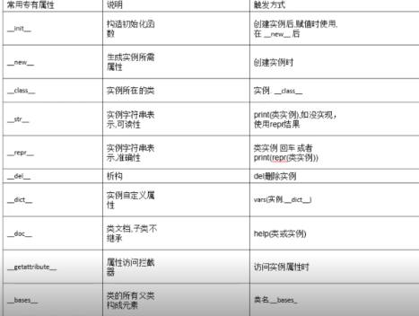
- new：构造函数
- init：初始化函数
- clas：实例所在类
- str：类似与Java的toString
- repr：
- del：析构
- dict:实例地定义属性
- doc：类文档，子类不继承
- getattibute:属性访问拦截器
bases:类的所有父类构成元素
getattribute属性访问拦截器
正常使用
class School(object):
def init(self,s1):self.subject1 = s1 self.subject2 = 'c++'def getattribute(self, obj):
if obj == 'subject1': print("log subject1") return 'redirect python' else: #注意else一定要有，否则其他属性就是None了 return object.__getattribute__(self,ojb)s = School(‘Pyhont’)
print(s.subject1)
print(s.subject2)坑
class Person(object):
def getattribute(self,obj):print("---test---") if obj.startwith("a"): return "haha" else: return self.testdef test(self):
print("heihei")函数执行内存都在栈上
t=Person()
t.a
t.b #会让程序死掉，因为会递归调用getattribute所有就崩掉了内建方法
- dir
dir(buildins) - range(1,10,2)
map(function, sequence[,sequence,…])根据提供的函数，对指定序列做映射
map(lambda x:x*x,[1,2,3])：结果为[1,4,9],python2直接是序列，python3是可迭代的对象
map(lamdbda x,y:x+y,[1,2,3],[4,5,6]) ：结果为[5,7,9]def f1(x,y):
return (x,y)
l1 = [1,2,3]
l2 = [‘a’,’b’,’c’]
l3 = map(f1,l1,l2)
print(list(l3))filter(function or None,sequence)对指定序列执行过滤操作
filter(lambda x:x%2,[1,2,3,4])
filter(None,”hello”)reduce(function,sequence[,initial])对参数序列中元素进行累积
python3中，reduce从全局名字空间中移除，放在functools模块里
from functools import reduce
reduce(lambda x,y:x+y, [1,2,3,4]) #10
reduce(lambda x,y:x+y, [1,2,3,4],5) #15
reduce(lambda x,y:x+y, [‘aa’,’bb’,’cc’],’dd’) #’ddaabbcc’
集合对象
- 支持的运算：
|:union：并集
&：intersection:交集
-:difference:差集
^:sysmmetric_difference：对称差集，x^y，在x或y中，但不会同时出现在二者之中
常用模块
functools
partial：偏函数
把一个函数的某些参数设置默认参数，返回一个新的采纳数，调用这个函数会更简单。
import functools
def showarg(*args,**kwagrs):
print(args)
print(kwargs)p1=functools.partial(showarg,1,2,3)
p1() #1,2,3 #{}
p1(4,5,6) #1,2,3,4,5,6 #{}
p1(a=’python’, b=’c++’) #1,2,3 #{“a”:”python”,”b”:”c++”}p2=functools.partial(showarg,a=3,b=’linux’)
p2()
p2(1,2)
p2(a=”ptyon”,b=”c++”)#这个会将默认值改掉wraps：包装函数
使用装饰器后，被装饰的函数已经是另外一个函数了，wraps的装饰器可以消除这样的副作用import functools
def note(func):
@functools.wraps(func)
def wrapper():print("note something") return func()return wrapper
@note
def test():
print(“i am test”)test()
print(test.doc) 如果不加，则返回的是wrapper(), 反之为test
其实就是在新家的这个装饰器内部，修改了wrapper的doc常用标准模块

常用三方模块
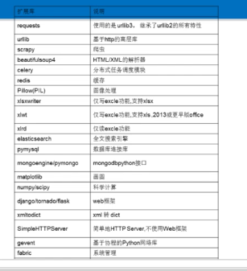
pdb调试
简介
执行时调试
python -m pdb some.py
只用这种就行
-m 指的是module， 像脚本一样运行模块交互调试
import pdb
pdb.run(‘testfun(args)’)程序下断点
import pdb
pdb.set_trace()
运行到这之后停住，使用与gdb类似，p打印，n单步，s进入函数，c继续执行，
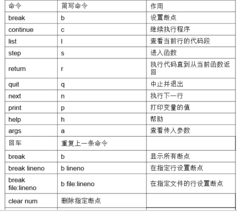
进程
fork方法
简介
fork调用一次返回2次，父进程返回子进程id，子进程返回0
一个父进程可以fork出很多子进程，所以父进程要记下每个子进程的id，而子进程只需要调用getppid()就可以拿到父进程的id
使用
import os
imprt time
pid = os.fork()
if pid<0:
time.sleep(2)
print(“fork调用失败”)
elif pid==0:
time.sleep(1)
print(“我是子进程(%s),我的父进程是(%s)”%(os.getpid(), os.getppid()))
else:
print(“我是父进程(%s),我的子进程是(%s)”%(os.getpid(), pid))
print(“父子进程都可以执行这里的代码”)
多个fork
这里创建了4个进程
import os
pid = os.fork()
if pid==0:
print(“子进程11”)
else:
print(父进程11)
pid = os.fork()
if pid == 0:
print(“子进程22”)
else:
print(“父进程22”)
复习
fork返回值是子进程的pid,如果本身是子进程,返回值就是0
通过Process对象创建子进程
实例
from multiprocessing import Process
import os
def run_proc(name): #子进程只执行这个函数
print(“子进程运行中，name=%s,pid=%d”%(name,os.getpid()))
if name == “main“
print(“父进程%d”%s.getpid())
p = Process(target=run_proc,args=(‘test’,))
print(“子进程将要执行”)
p.start()
p.join() #加这句话，父进程等待子进程结束之后再执行
print(“子进程执行结束”)
Process常用方法
is_alive:判断进程是否执行
join([timeout])是否等待进程实例执行结束，或等待多少秒
start(),启动
run()，没有制定target时执行
terminat()，不管任务是否完成，终止任务，一般父进程来终止子进程
Process常用属性
name:当前进程实例别名，默认为Process-N
pid,当前进程pid
通过Prcess子类创建子进程
实例
from multiprocessing import Process
import time
import os
class ProcessSubClass(Process):
def init(self,interval):
super().init()
self,interval = interval
#重写父类run
def run(self):
t_start= time.time()
time.sleep(self.interval)
t_end = tim.time()
print(%s执行结束，耗时%d%(os.getpid(),t_end-t_start))
if name==”main“:
print(“主进程执行开始”)
p = ProcessSubClass(2)
p.start()
p.join()
print(“主进程执行结束”)
进程池
multiprocessing模块提供的Pool方法
如果池已经满了，只能等待，如果没有满，并且有空闲的，则去空闲的，反之，创建一个新进程。
实例
from multiprocessing import Pool
import os,time,random
def worker(msg):
t_start = time.time()
print(“子进程%d,%d”,%(os.getpid(),msg))
time.sleep(random.randint(1,3)*2)
t_stop = time.time()
print(“执行完毕，用时:%d”%(t_stop-t_start))
#创建进程池
pool = Pool(3)
for i in range(0,10):
#从进程池申请进程，传参为函数名、参数元组
#apply_async是异步申请，apply是同步。异步同时请求3个，然后同时执行；同步一个一个请求，上一个进程退出才能执行下一个
pool.apply_async(worker,(i,))
#关闭进程池，close之后再写join，进程池中的进程已经是start状态，所以不需要再start了
pool.close()
pool.join()
multiprocessing.Pool函数解析
- apply_async(func[,args[,kwagrs]]):
- apply
- close():进程池不再接受新的任务，已用的进程慢慢关闭
- terminate()：不管任务是否完成，立即终止
- join()：与Process相同
消息队列
进程之间
from multiProcess import Process
from multiProcess import Queue
def writer(q):
for item in “ABCDE”
print(“正在往消息队列中写入%s”%item)
q.put(item)
time.sleep(1)
def reader(q):
while True:
if not q.empty():
item = q.get()
print(“从消息队列中读出%s”%item)
time.sleep(random.random())
else:
break
q = Queue()
pw = Process(target=writer,args=(q,))
pw.start()
pw.join()
pr = Process(target=reader,args=(q,))
pr.start()
pr.join()
进程池
from multiProcess import Pool,Manager
import time,random
def writer(q):
for item in “ABCDE”
print(“正在往消息队列中写入%s”%item)
q.put(item)
time.sleep(1)
def reader(q):
while True:
if not q.empty():
item = q.get()
print(“从消息队列中读出%s”%item)
time.sleep(random.random())
else:
break
q = Manager().Queue() #进程池中，只能使用Manager创建的消息队列
pool = Pool(3)
Pool.apply(writer,(q,)) #执行结束之后，再执行下一个进程
Pool.apply(reader,(q,))
Pool.close()
Pool.join()
感受
python的进程一部分继承了linux轻进程的特点
线程
线程简介
进程是作为资源分配的单位
调度和执行的单位
python的thread模块以及threading模块
threading模块对thread做了一些包装
实例
import threading
import time
def fun(num):
print(“线程%d执行”%num)
time.sleep(2)
for i in range(5):
t = threading.Thread(target=fun,args=(i+1,))
t.start()
函数
- threading.enumerate():当前线程数量
线程创建方式
- threading.Tread的对象
子类化thread.Tread，实现run方法
import threading,time
class MyThread(threading.Thread):def run(self): for i in range(5): time.sleep(1) #这里self.name是父类的属性，默认是Thread-N print("I am "+ self.name+"@"+str(i))if name==”main“:
t = MyThread() t.start()传参可以通过重新定义init方法来传参
线程的几种状态
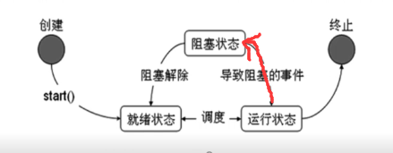
就绪，运行，阻塞状态
就绪状态到运行状态是需要系统的调用，才进入运行状态，运行状态受阻塞的事件，进入阻塞状态
运行状态下的时间片用完，进入就绪状态
线程之间通信
共享全局变量
传参方式
将全局变量作为参数传递给线程
w1 = threading.Tread(target=worker1,args=(numlist,))
这里的传参方式，直接调用函数传参需要注意的事项相同，对于可不变类型与不可变类型需要注意。对于可变参数，传递的是引用。不可变参数传递会创建新对象。
线程安全
操作分为3步骤：
cpu线程内存将g_num读到寄存器
在寄存器中+1
将寄存器写回内存
线程锁
为保证线程安全
threading模块中定义了Lock类，可以处理锁定
mutex = threading.Lock()
mutex.acquire([blocking]),返回一个bool变量
blocking默认为True，阻塞;False不阻塞
mutex.release()
死锁
这个太熟悉了,不说了
使用锁使线程顺序执行
就是每个线程一个锁.初始时,除了第一个线程的锁,其他锁都锁死,第一个线程执行完,开第二把锁,第二个执行完开第三把,依次类推.
Queue模块
python的Queue模块
- FIFO(先入先出):Queue
- LIFO(后入先出):LifoQueue
- 优先级队列:PriorityQueue
python2中from Queue import Queue
python3中from queue import Queue
使用方法与进程的相同
queue.put(对象)
queue.get()
ThreadLocal变量
ThreadLocal变量虽是全局变量，但每个线程都只读写自己线程的独立副本，互不干扰。解决了一个线程中各个函数之间相互传递的问题。
threadLocal最常用的地方就是为每个线程绑定一个数据库连接，Http请求，用户身份信息等，这样一个线程的所有调用到的处理函数，都可以非常方便的访问这些这些资源
import threading
local_school = threading.local() #这里的local说明可能不是一个类，是个函数也不对，听奇怪不遵循python3的类首字母大写的规范
就是一个线程函数中调用另一函数，这两个函数之间的数据传递。
其实是由于python的传参，对于可变类型传递的都是引用，造成了线程内部调用的函数都是线程不安全的，所以使用了这种类似与Queue的方法,将这些传参都放到全局变量里去获取。这个与queue不同的是threadLocal对各个线程是独立的，像是每个线程都有一个的样子。而且它是key-value方式存储
复习
主要是对ThreadLocal的理解，local可以看作是一个对象，它在不同线程中变量相同但数据不同。
【新】协程
介绍
比线程更小的执行单元，是在线程下的运行单元，协程一般由用户来实现，比线程占用资源更少
用处：
IO密集型程序比较适合协程，而CPU密集型不适合协程
底层：
yield来停下，然后用next来实现
greenlet使用
from greenlet import greenlet
import time
def test1():
while True:
print(“—AAA—“)
gr2.switch()#这里切换到test2方法中运行
def test2():
while True:
print(“—BBB—“)
gr1.switch()
gr1 = greenlet(test1)
gr2 = greenlet(test2)
gr1.switch
gevent
import gevent
def f(n):
for i in range(n):
print(“%s:%d”%(gevent.getcurrent(),n))
gevent.sleep(1) #需要有io等待，这里模拟耗时任务，需要用gevent中的sleep，有IO等待，不需要人工调用，gevent自动切换
g1 = gevent.spawn(f,5)
g2 = gevent.spawn(f,5)
g3 = gevent.spawn(f,5)
g1.join()
g2.join()
g3.join()
并发下载器
from gevent import monkey
import gevent
from urllib import request
#有IO需要有这句话，才可以对IO进行耗时进行捕获，从而自动切换
monkey.patch_all()
def myDownload(url):
print(url)
response = request.urlopen(url)
data = response.read()
prin(“%d bytes received from %s”%(len(data),url)
gevent.joinall([
gevnet.spawn(myDownload,”http://www.baidu.com"),
gevnet.spawn(myDownload,”http://www.sina.com")
gevnet.spawn(myDownload,”http://www.weibo.com")
])
复习
并发下载器，提示了多线程/多协程去爬取网页的技术，网页的爬取与网页的分析是可以分开来使用的，多线程可以用作很多方面。
python网络
网络地址与主机地址
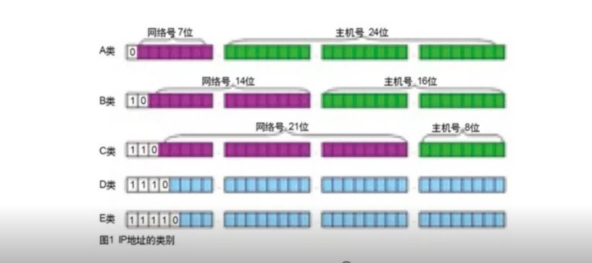
A类：1.0.0.1 - 126.255.255.254 可用的A类网络有126个每个网络容纳167 7214个主机
B类：128.1.0.1 - 191.255.255.254 B类网络有16384个，容纳主机65534个
C类：192.0.1.1 - 223.255.254 C类网络209 7152个，容纳主机254个
D类：第一个字节以1110开始，它并不指向特定的网络，目前这一类地址被用在多点广播中多点国博地址用来一次寻址一组计算机地址范围224.0.0.1 - 239.255.255.254
E类：以1111开始，为将来保留，作为实验使用私有IP 有一部分ip用于局域网使用，不再公网中使用，包括
-A类 10.0.0.0 - 10.255.255.255 -B类 172.16.0.0 - 172.31.255.255 -C类 192.168.0.0 - 192.168.255.255 - 127.0.0.1 - 127.255.255.255用户回路测试共有IP ip
路由器完成公有ip与私有ip之间的转换：所以说一台私有ip的电脑不能作为网络服务器，因为外界不能正确访问到它端口号
端口号只有整数，范围从0～65535
知名端口号，0～1023.如80:http, 21:ftp
动态端口：1024～65535
netstat -an协议

socket: cs架构与bs架构socket-udp
使用
- import socket
socket.socket(AddressFamily, Type)
AddressFamily:AF_INET
Type:SOCK_STRAEM(tcp),SOCK_DGRAM(udp)udp应用
语音广播，视频，QQ，TFTP,SNMP,DNS，RIP（路由信息协议，报告股票市场）
收发数据
updSocket = socke(AF_INET,SOCKET_DGRAM)
sendAddr=(‘192.168.1.1’,8080)
sendData = raw_input(“请输入要发的数据”)
updSocket.sendto(sendData,sendAddr)bindAddr=(‘192.168.1.2’,7788)
udpSokcet.bind(bindAddr)
rcvData = udpSocket.recvfrom(1024) #1024代表本次接受的最大字节数,此处接受收时会阻塞
print(rcvData)
updSocket.close()
tftp
- 使用协议udp，端口69
- 使用wireshark抓包
使用tftpd32来做tftp服务器
过程：
- 客户端发请求，下载还是上传（操作类型）、文件名
- 服务器收到请求确认：如果文件没有，发出错信息；反之，发确认信息，或者直接发文件一部分
- 客户端收到文件后：如果收到文件数据，需要发确认信息，并且将数据保存本地
如果收到出错信息，终止下载 - 循环过程：服务器发文件一部分，客户端确认，知道文件发完
- 如果文件结束，应该有一个文件结束的标志
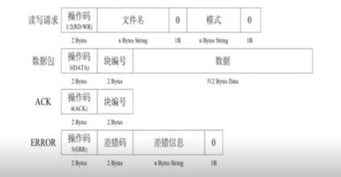
操作码：1是读即下载，2是写即上传，3是数据包，4确认，5出错
struct模块，处理C语言的结构体
pack(): pack(fmt,v1,v2…)
unpack(): unpack(fmt,string)
calcsize(fmt)，计算给点内存
fmt：!大端，windows下下小端，linux下大端，网络也是大端。大端就是高位在前
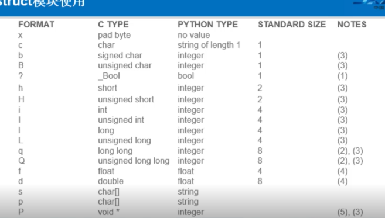
socket-tcp
服务器流程：
- 创建套接字
- bind绑定ip与port
- listen是套接字变为可以被动链接
- accept等待客户端的连接
- recv/send接收发送数据
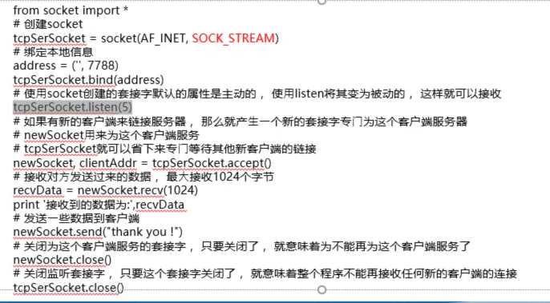
客户端历程
- 创建socket
- connect
- send/recv
- close
【重】多路复用
select
可以把socket当作文件读写的，用多路复用来监听
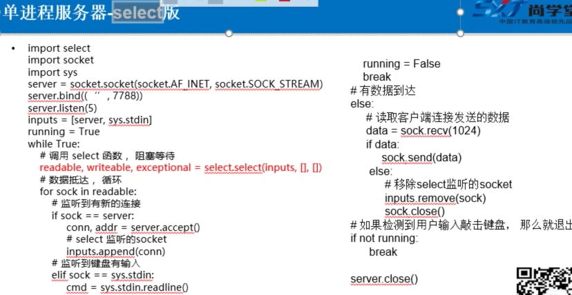
import select
socketServer = socket(AF_INET,SOCK_STREAM)
socketServer.setsockopt(SOL_SOCKET,SO_REUSEADDR,1)
inputs=[socketServer,sys.stdin]
readable,writeable,exceptional = select.select(inputs,[],[])
for r in readable:
if r == socketServer:
conn,addr = r.accept()
inputs.append(conn)
elif r== sys.stdin:
pass
else:
data = r.recv(1024)
if data:
r.send(data)
else:
inputs.remove(r)
select 类似与中断，同时监听多少个,是一种轮询的方式
epoll只有linux用
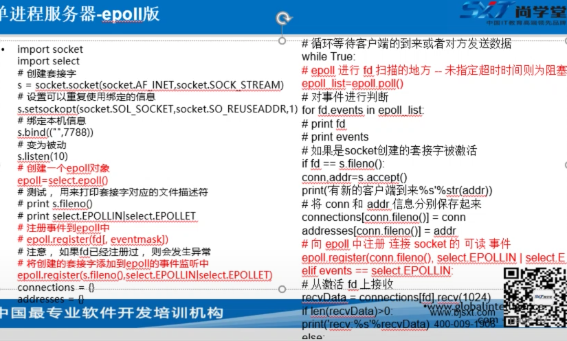
from socket import *
import select,sys
epoll = select.epoll()
epoll.register(tcpsocket.fileno(), select.EPOLLIN|select.EPOLLET)
epoll.register(sys.stdin.fileno(), select.EPOLLIN|select.EPOLLET)
conections = {}
adress={}
epoll_list = epoll.poll()
for fd,events in epoll_list:
if fd == tcpsocket.fileno()
conn,addr = tcpsocket.accept()
connections[conn.fileno()] = conn
address[conn.fileno()] = adress
epoll.register(conn.fileno(), select.EPOLLIN|select.EPOLLET)
elif fd == sys.stdin.fileno():
pass
elif events == select.EPOLLIN:
data = connections[fd].rect(1024)
if data:
connections[fd].send(data)
else:
conections[fd].close()
connections.pop(fd)
address.pop(fd)
【重】网络工具
NetAssist:网络调试助手
可以用tcp，udp协议与写的代码进行交互
wireShark:网络抓波工具
选中网卡，能抓到该网卡上的网络传输数据
tftpd32：tftp服务器
选中文件目录，提供文件上传、下载服务
Packet Tracer
- 集线器与交换机区别
集线器就是做转发，集线器网络容易出网络风暴
交换机有路由，可以做寻址等 arp
arp攻击：修改arp表，将所有的ip都指向攻击者，然后收到后进行篡改
arp就是寻址，根据ip去寻找mac地址，然后记录在本地的arp列表中路由器作用
- 连通不同的网络：
路由器相当于双网卡，一段连一个网络。一个网络中，需要设置一个网关。如果是同一网段，路由器直接发送个给对应机器，不同网段，则直接发送给网关
不同网络通信时，显示主机广播自己，然后寻址网关的的mac地址，网关返回后，主机将arp层的目的mac写为网关，ip当然还是要连接的另一网络的ip - 路由寻址
多台路由器时，需要有路由表，仿真期间，用的是静态路由表，每个arp都根据路由表传递给下一个ip，返回下一个路由的mac地址，记录在前一个路由器中，这样，在发送imcp时，路由器根据需要，改写目的mac即可。
- 连通不同的网络：
Http
http包被tcp包含。前边握手包，后边结束包
数据库
mycat
都是关系型数据库，就是在多个关系型数据库（尤其是mysql）上搭建的中间件，搭建成关系型数据库集群。
其实类似于zookeeper
python下mysql的使用
安装
pip3 install PyMySQL
Connection对象
- 建立与数据库的连接
- 创建对象，调用connect()方法
host:主机名，数据库名，用户名，密码，端口默认3306(oracle是1521)，参数charset默认’gb2312’ - 方法
close()关闭
commit()提交
rollback()回滚
cursor()游标
Cursor对象
- 执行sql语句
- 创建对象，Connection对象的cursor()方法
cursor = conn.cursor - 方法
excute(operation[,parameters])
fetchone()
next()
fetchall()
实例
import pymysql
connection = pymysql.connect(“localhost”,”root”,”sun12358”,”pythondb”)
cursor = connection.cursor()
cursor.execute(“select * from emp”)
rl = cursor.fetchall()
cursor.close()
connection.close()
其他
日期字符转换
datetime.datetime.strftime(emp[4 ], “%Y-%M-%D”)
emp[4].strftime(“%Y{y}%m{m}%d{d}”).format(y=’年’,m=’月’,d=’日’)sql注入：select * from dept where depton > 18 or 1=1
where后边的传参一定要注意
数据库代码封装
复习
竟然用cursor去执行，而不是用connection，statement等等
想法
- 由礼物购买想到的
送礼物有3个元素决定：送礼物人，礼物，接收礼物人
礼物是由送礼物者与受礼物者决定
需要分析两个人的特性，再给予推荐
特性可能包括：2者关系，年龄，居住地，职业，健康状况（医院），经济水平（银行），礼物时间等等
礼物特点：历史含义，产地特性，时间特性等等
python基础复习
基本语句
/ 与 //
/ 是浮点除法，//是整数除法
在python2.x中 / 与C语言中相同，即必须有浮点数结果才是浮点，否则是整数
new与init
- new是构造函数，是一个类函数.init是初始化函数，是对象函数
- new返回一个实例，而init不返回
- 只有在new返回实例后init才会被调用
xxx, _xxx, __xxx
_xxx 不能用’from module import *’导入 （相当于protected）
__xxx__ 系统定义名字 (系统内置的，比如关键字)
__xxx 类中的私有变量名 （privated），所以更加不能使用from module import进行导入了,可以通过 _类名_xxx来访问。
and or 逻辑运算
x and y ： 布尔”与” - 如果x为False，x and y 返回False，否则它返回 y 的计算值
x or y: 布尔”或” - 如果 x 是 True，它返回 True，否则它返回 y 的计算值
注意计算值不一定是布尔值，可能是数字、字母等
name
直接运行与模块引入模块时，不同
字典
dict3 = {[1,2,3]: “uestc”}
字典类型 dict 的键值必须是不可变的，否则 “通过唯一的 key 值确定对应的 value” 将不成立。字典的键可以是元组。
d = {}字典
d = {,}集合set
a = [‘name’,’age’]
b=[‘dong’,32]
c = dict(zip(a,b))
上下文管理器with:
上下文管理器（Context Manager）：支持上下文管理协议的对象，这种对象实现了enter() 和 exit() 方法。上下文管理器定义执行 with 语句时要建立的运行时上下文，负责执行 with 语句块上下文中的进入与退出操作。通常使用 with 语句调用上下文管理器，也可以通过直接调用其方法来使用。
with 语句的语法格式
with context_expression [as target(s)]:
with-body
这里 context_expression 要返回一个上下文管理器对象，该对象并不赋值给 as 子句中的 target(s) ，如果指定了 as 子句的话，会将上下文管理器的 enter() 方法的返回值赋值给 target(s)。target(s) 可以是单个变量，或者由“()”括起来的元组（不能是仅仅由“,”分隔的变量列表，必须加“()”）
调试：
- 执行时调试
python -m pdb some.py
只用这种就行
-m 指的是module， 像脚本一样运行模块
- 交互调试
import pdb
pdb.run(‘testfun(args)’)
- 程序下断点
import pdb
pdb.set_trace()
运行到这之后停住，使用与gdb类似，p打印，n单步，s进入函数，c继续执行，
基本函数
sorted(a) #本来就是按升序排序,reverse=True，就是降序
a.sort()
s = set(a)
for i in s:
print(i,a.count(i))
def demo(*v):
print(v)
print(max(v))
print(sum(v))
demo(1,2,3)
demo(1,2,3,4)
demo(1,2,3,4,5)
def Sorted(v):
t = v[::]
r = []
while t:
tt = min(t)
r.append(tt)
t.remove(tt)
return r
x = [1,3,5,2,1,0,9,7]
print(x)
print(Sorted(x))
基本模块
re
主要2种用法：
re.find(r’\d[4-5]\s\d{1,2}’,’aetbert’ )patten = re.compile(r’\b[a-zA-Z]{3}\b’)
patten.findall(x)个数：
+*? {}
范围：
[a-z]
语法糖：
\b \w \s \d
界定符：
^ $os
os.getcwd()
os.chdir()
os.listdir()os.path.isdir()
os.path.join(dir+file)
语言特色
C++/C内存管理
一个由C/C++编译的程序占用的内存分为以下几个部分：
1、栈区（stack）— 由编译器自动分配释放，存放函数的参数值，局部变量的值等。其操作方式类似于数据结构中的栈。
2、堆区（heap） — 一般由程序员分配释放，若程序员不释放，程序结束时可能由OS（操作系统）回收。注意它与数据结构中的堆是两回事，分配方式倒是类似于链表。
3、全局区（静态区）（static）—，全局变量和静态变量的存储是放在一块的，初始化的全局变量和静态变量在一块区域，未初始化的全局变量和未初始化的静态变量在相邻的另一块区域。程序结束后由系统释放。
4、文字常量区 —常量字符串就是放在这里的。程序结束后由系统释放。
5、程序代码区—存放函数体的二进制代码。
python内存管理
对象池
Python为了优化速度，
小整数：使用了[-5,257)对象池，避免为整数频繁申请和销毁内存。[257,无穷)都是新建对象
单个字符：也使用对象池，常驻内存
一个单词的字符串：也是在对象池中。采用引用计数共用，引用计数为0则销毁。
垃圾收集
引用计数
优点：
实时，一旦没有引用，内存就直接释放，不用其他机制的等待特定时机
缺点：
多占点内存
有可能出现循环引用：a中有b，b中有a.这是用的是隔代收集来收集